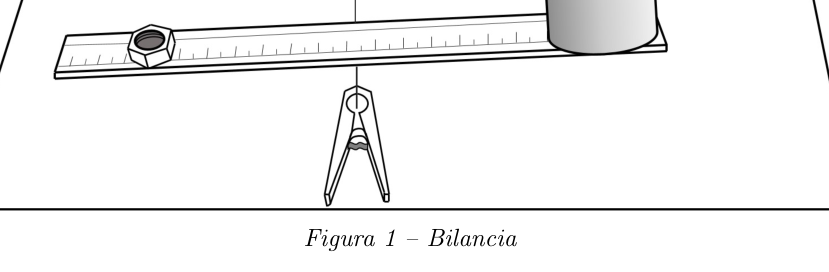
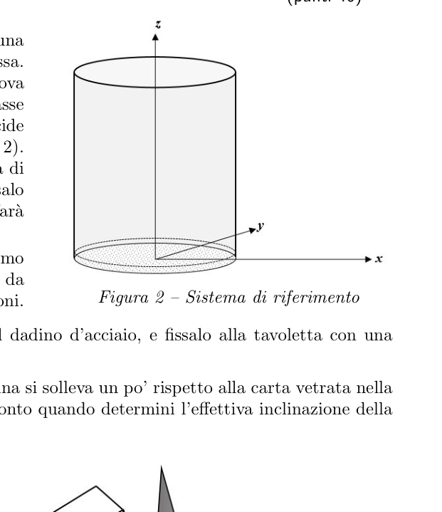
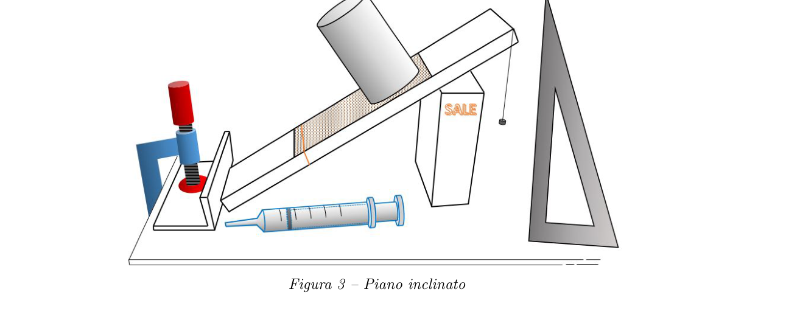
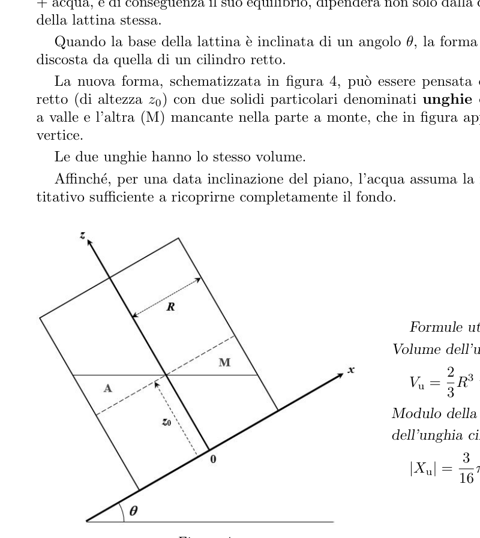

ISTRUZIONI:
- Appena ti verrà dato il via, scrivi chiaro il tuo NOME e COGNOME sul cartoncino che hai ricevuto insieme ai fogli e alle buste, grande e piccola; poi inserisci il cartoncino nella busta piccola e chiudila. Metti subito la busta chiusa in quella grande, che userai alla fine per consegnare tutti i fogli. Successivamente, NON dovrai scrivere il tuo nome su nessun foglio né sulle buste, ma solo il tuo Codice Studente !
- Leggi con cura il testo della prova.
- Su ogni facciata scrivi chiaramente in alto a destra:
- il tuo Codice Studente
- il numero di pagina
- il numero totale di pagine usate. Per esempio: pag. 3 di 7
Gara Nazionale — Prova Sperimentale — Giovedì 14 Aprile 2016 — Liceo Statale “Medi”, Senigallia (AN) — Tempo: 4 ore
Istruzioni generali
Ti consigliamo di leggere attentamente tutto il testo seguente prima di iniziare a lavorare con i materiali. Non ti si chiede una relazione di laboratorio, ma solamente una serie di risposte. Ogni risposta deve avere una sua giustificazione sintetica e chiara, anche se non è chiesto esplicitamente nella domanda. Se, per migliorare una misurazione, adotti accorgimenti significativi, registrali nel corrispondente foglio risposte. Al termine della prova inserisci i fogli con le risposte e la minuta nell’apposita busta da consegnare.
LATTINA IN EQUILIBRIO — Punti 200
Premessa
In questa prova ti si chiede di studiare l’equilibrio di una lattina in diverse situazioni. Scrivi nei fogli appositi le tue risposte, riportando le misure con le rispettive incertezze, a meno che nel testo non sia detto esplicitamente di non valutare queste ultime. Annota il numero segnato a pennarello sulla lattina. Avrai a che fare con recipienti contenenti acqua, da non rovesciare, ovviamente. Occupa un tavolo esclusivamente con i materiali hardware elencati qui di seguito. Sistema sull’altro tavolo i fogli di carta, la calcolatrice, e l’occorrente per scrivere. Lascia separati i due tavoli per evitare che acqua, inavvertitamente versata, passi da un tavolino all’altro.
Materiali
- Lattina di acciaio con pareti di spessore
- Per la bilancia:
- Listello di legno
- Nastro millimetrato di carta
- Lama per seghetto
- 2 mollette da bucato
- 4 dadi di acciaio con indicazione della rispettiva massa
- Nastro adesivo trasparente
- Per il piano inclinato
- Tavoletta di legno
- 1 scatola di sale da 1 kg per sostenere la tavoletta
- 1 angolare per bloccare la tavoletta
- 1 morsetto per fissare l’angolare al tavolo
- Carta vetrata. Attenzione a non bagnarla!
- Nastro adesivo di carta
- 5 elastici di para
- Siringa
- Squadra millimetrata
- Secchiello con acqua
- Carta assorbente
- Puntina da disegno
- 50 cm circa di filo per cucire
- Dadino metallico
- Calibro ventesimale. L’indice dello strumento è lo zero della scala incisa sul cursore
- Carta millimetrata
- Forbici
———————————
1 – Massa e dimensioni della lattina (punti 40)
Figura 1 – Bilancia
Vedi la figura 1. Fissa al listello con nastro adesivo un tratto del nastro millimetrato di carta, in modo che lo zero coincida con una delle due estremità. Il nastro fornisce un sistema di ascisse lungo il listello, che costituirà il giogo della bilancia. Appoggia il listello sulla lama di seghetto mantenuta diritta con due mollette da bucato. Per effettuare le misure di massa hai a disposizione dei dadi metallici. Su ciascuno dei dadi è riportato il valore della rispettiva massa, con incertezza pari a .
1.a – L’equilibrio del listello appoggiato sulla sola lama è stabile, instabile, indifferente? Determina la massa della lattina. Illustra il procedimento seguito, indicando chiaramente la sequenza delle operazioni.
1.b – Misura con il calibro le dimensioni della lattina che di volta in volta riterrai necessario conoscere. Trascrivi le misure, anche se ottenute in seguito, nell’apposito spazio del foglio delle risposte. Indica chiaramente a quali grandezze si riferiscono.
2 – Centro di massa della lattina vuota (punti 40)
Per localizzare il centro di massa (CM) della lattina si sceglie una terna di assi cartesiani ortogonali solidale con la lattina stessa. L’origine è al centro del cerchio di base della lattina, che si trova qualche millimetro sotto il suo fondo piatto. L’asse e l’asse appartengono al piano del cerchio di base, l’asse coincide con l’asse longitudinale di simmetria della lattina (v. figura 2). Ritaglia un rettangolo di carta vetrata lungo una quindicina di centimetri e largo come la tavoletta di legno o poco meno; fissalo con nastro adesivo di carta e con elastici alla tavoletta che farà da piano inclinato, in modo che vi aderisca perfettamente. Appoggia la tavoletta sulla scatola di sale, e spingi l’estremo inferiore contro l’angolare fissato al banco con il morsetto da tavolo (v. figura 3), così che non si sposti durante le misurazioni.
Figura 2 – Sistema di riferimento
Realizza un filo a piombo annodando il filo da cucito al dadino d’acciaio, e fissalo alla tavoletta con una puntina da disegno. Se, quando inclini la tavoletta, vedi che il fondo della lattina si solleva un po’ rispetto alla carta vetrata nella parte a monte, devi stimare di quanto si solleva e tenerne conto quando determini l’effettiva inclinazione della lattina rispetto al piano orizzontale.
Figura 3 – Piano inclinato
2.a – Determina le coordinate e del centro di massa della lattina vuota, studiandone l’equilibrio sul piano inclinato. Illustra il procedimento seguito, indicando chiaramente la sequenza delle operazioni. Le coordinate vanno riferite al sistema di assi definito in precedenza, con l’asse orientato come in figura 4.
2.b – Considera la possibilità di inserire acqua nella lattina, mantenuta appoggiata su un piano orizzontale. Descrivi solo qualitativamente se, e come, ritieni che debbano cambiare le coordinate del centro di massa del sistema lattina+acqua, all’aumentare della quantità d’acqua nella lattina fino al suo completo riempimento.
3 – Lattina con acqua in equilibrio su piano inclinato (punti 80)
Se la lattina con acqua viene appoggiata su un piano inclinato, la posizione del centro di massa del sistema lattina + acqua, e di conseguenza il suo equilibrio, dipenderà non solo dalla quantità d’acqua ma anche dall’inclinazione della lattina stessa. Quando la base della lattina è inclinata di un angolo , la forma geometrica assunta dalla massa d’acqua si discosta da quella di un cilindro retto. La nuova forma, schematizzata in figura 4, può essere pensata come data dalla combinazione del cilindro retto (di altezza ) con due solidi particolari denominati unghie cilindriche: una (A) aggiunta nella parte a valle e l’altra (M) mancante nella parte a monte, che in figura appaiono in sezione come triangoli opposti al vertice. Le due unghie hanno lo stesso volume. Affinché, per una data inclinazione del piano, l’acqua assuma la forma descritta, occorre versarne un quantitativo sufficiente a ricoprirne completamente il fondo.
Figura 4
Formule utili: Volume dell’unghia cilindrica
Modulo della coordinata del centro di massa dell’unghia cilindrica
Figura 4 — è l’altezza del cilindro retto, che è la forma assunta dall’acqua per . è il raggio della sezione circolare del cilindro.
Poni la lattina sul piano inclinato, varia la quantità d’acqua al suo interno dosandola con la siringa. Per ogni quantità di acqua aumenta con cautela l’inclinazione del piano di appoggio fino a che il sistema lattina+acqua è al limite tra equilibrio e ribaltamento. Fai molta attenzione quando cerchi questa inclinazione critica. Usa una mano per spostare la scatola di sale e variare così l’inclinazione del piano d’appoggio, metti l’altra mano a pochi millimetri dalla lattina, pronta ad afferrarla quando questa inizia a capovolgersi. Controlla se nella posizione critica di quasi ribaltamento il fondo della lattina risulta coperto di acqua. Dopo aver sistemato la tavoletta alla giusta inclinazione, togli la lattina dal piano inclinato e lasciala appoggiata sul tavolo per evitare di rovesciare l’acqua inavvertitamente, mentre effettui le misurazioni.
3.a – Per ogni massa di acqua nella lattina, determina la corrispondente inclinazione critica al limite tra equilibrio e ribaltamento. Riporta le misure in una tabella.
3.b – Descrivi come varia al variare della massa d’acqua nella lattina.
3.c – Dalle misure effettuate ricava le coordinate e del centro di massa del sistema lattina + acqua in corrispondenza delle massime inclinazioni determinate al punto 3a. Spiega il ragionamento per ricavare i valori delle coordinate e . Non sono richieste le loro incertezze.
3.d – Rappresenta graficamente nel piano le posizioni del centro di massa, riportandone le coordinate in scala 10:1 .
4 – Galleggiamento della lattina con acqua (punti 40)
Versa acqua nella lattina in quantità tale che questa galleggi nell’acqua del secchio con l’asse di simmetria verticale in equilibrio stabile. Usando la siringa togli gradualmente acqua dalla lattina fino a raggiungere la condizione per cui il sistema assume un equilibrio che puoi giudicare “indifferente”: la lattina può stare in equilibrio sia con l’asse verticale, sia con l’asse obliquo con un’inclinazione qualsiasi, naturalmente senza imbarcare acqua all’interno.
4.a – Qual è la massa d’acqua per cui si verifica questa situazione di equilibrio “indifferente”? Come l’hai misurata?
4.b – Come spieghi il fatto che proprio con questa quantità d’acqua la lattina è in equilibrio, sia con l’asse verticale che inclinato? Per rispondere a questa domanda può essere di aiuto – considerare che la lattina è immersa nello stesso liquido che ha al suo interno, – trascurare lo spessore della parete e del fondo della lattina rispetto alle altre dimensioni.
p.3 — Bilancia con listello, nastro millimetrato e molletta

p.4 — Sistema di riferimento con lattina cilindrica

p.4 — Lattina su piano inclinato con siringa

p.5 — Geometria lattina inclinata, unghie cilindriche

Topic: Rigid Body Statics, Fluid Mechanics, Newtonian Mechanics Metodi: Free-Body Diagram, Torque & Angular Momentum Analysis, Hydrostatic Equilibrium, Experimental Data Analysis Competenze: Experimental Data Analysis, Measurement & Instrumentation, Mathematical Modeling Objects: Container, Inclined Plane Fonte: Testo (PDF) — p.1 Soluzione: Soluzioni (PDF)
The following is the list of the products:
- As soon as you are ready to leave, write your name and ID clearly on the card you have received along with the leaves and envelopes, large and small; then insert the card into the small envelope and close it. Put the closed envelope right now in the big one, which you’ll eventually use to deliver all the sheets. After that, you won’t have to write your name on any paper or envelopes, only your Student Code!
- Read the test text carefully.
- On each façade, write clearly up on the right:
- your Student Code .
- the page number
- the total number of pages used. For example, p. 3 di 7
National competition Experimental test Thursday 14 April 2016 State High School “Medi”, Senigallia (AN) Time: 4 hours
General instructions
We recommend that you read the following text carefully before you start working with the materials. You’re not asked for a lab report, just a series of answers. Each answer must have its own summary and clear justification, even if it is not explicitly asked in the question. If significant measures are taken to improve a measurement, record them on the corresponding answer sheet. At the end of the test, insert the answers and the minutes into the appropriate envelope to be delivered.
Latin in balance Points 200
The premise
In this test, you’re asked to study the balance of a can in different situations. Write your answers on the appropriate sheets, reporting the measures with their uncertainties, unless the text explicitly states not to evaluate them. Write down the number marked with a pin on the can. You’re going to have to deal with water containers, not overturn, of course. It occupies a table exclusively with the hardware materials listed below. Put the paper sheets, the calculator, and the writing equipment on the other table. Keep the two tables separate to prevent water from passing from one table to another.
Other materials
- Steel plate with wall thickness
- For the balance sheet:
- The wooden list
- Millimeter tape of paper
- A saw blade .
- Two dishes
- 4 steel dice with indication of their mass
- Transparent adhesive tape
- For the sloping plane
- A wood table
- 1 box of salt of 1 kg to support the tablet
- 1 angle to lock the tablet
- 1 handkerchief to fix the corner to the table
- Glass paper. Be careful not to wet her!
- Paper adhesive tape
- 5 rubber bands
- The siren .
- Millimeter team .
- Dry with water
- Absorbent paper
- A little drawing dot .
- about 50 cm of sewing thread
- Metallic coating
- It’s a 20th. The index of the instrument is zero on the scale engraved on the cursor
- Millimeter paper
- It ‘s a forbidden thing .
———————————
1 Mass and size of the can (point 40)
Figure 1 Libra
See figure one. Attach a strip of paper to the ribbon with a strip of adhesive tape so that the zero matches one of the two ends. The tape provides a system of axes along the listel, which will form the yoke of the balance. Hold the saw blade on the saw blade held straight with two laundry racks. You have metal dice to measure the mass. The value of the respective mass is reported on each of the dice, with uncertainty of .
1.a Is the balance of the blade resting on the sole blade stable, unstable, indifferent? Determine the mass of the can. It shall explain the procedure followed, clearly indicating the sequence of operations.
1.b Measure the size of the can with the caliber which you may find necessary to know from time to time. Write down the measurements, even if obtained later, in the appropriate space on the answer sheet. It clearly indicates what magnitude they refer to.
2 Center of mass of the empty can (points 40)
To locate the centre of mass (CM) of the can, a tray of orthogonal Cartesian axes is chosen to be joined to the can itself. The origin is in the center of the base circle of the can, which lies a few millimeters below its flat bottom. The axis and the axis belong to the plane of the base circle, the axis coincides with the longitudinal axis of symmetry of the can (see paragraphs 1 and 2). The Commission shall adopt implementing acts in accordance with Article 21 of this Regulation. Cut a rectangle of glass paper about two inches long and about the size of a wooden board or less; fasten it with paper tape and rubber to the board, which will tilt it flat so that it adheres perfectly to you. Hold the table against the salt box, and push the bottom end against the corner fixed to the counter with the table handle (see. The measurement of the distance between the two points is carried out in accordance with the following formula:
Figure 2 Reference system
Make a lead thread by knotting the seamstring to the steel handle, and attach it to the board with a drawing point. If, when you tilt the tablet, you see that the bottom of the can is slightly raised relative to the glass paper on the upper part, you need to estimate how much it is raised and take this into account when determining the actual tilt of the can relative to the horizontal plane.
Figure 3 Inclined plane
2.a Determine the coordinates and of the center of mass of the empty can, studying its sloping balance. It shall explain the procedure followed, clearly indicating the sequence of operations. The coordinates shall be related to the axis system defined above, with the axis oriented as shown in Figure 4.
2.b Consider the possibility of placing water in the can, while resting on a horizontal plane. Please describe only qualitatively whether and how you believe the mass centre coordinates of the can+water system should be changed, increasing the amount of water in the can until it is fully filled.
3 Water bottle with water in equilibrium on a sloping plane (points 80)
If the water can is leaning on an inclined plane, the position of the center of mass of the water + water can system, and consequently its balance, will depend not only on the amount of water but also on the inclination of the can itself. When the base of the can is tilted at an angle , the geometric shape taken by the water mass deviates from that of a straight cylinder. The new shape, outlined in Figure 4, can be thought of as being given by the combination of the straight cylinder (height ) with two particular solids called cylindrical nails: one (A) added in the lower part and the other (M) missing in the upper part, which in the figure appear in sections as triangles opposite the top. Both nails have the same volume. In order for water to take the form described for a given slope of the plan, a sufficient amount of water to cover the bottom of the plan must be poured.
Figure 4
Useful formulas: Volume of the cylindrical nail
Module of the coordinate of the centre of mass of the cylindrical nail
Figure 4 is the height of the straight cylinder, which is the shape taken by the water for . is the radius of the circular section of the cylinder.
You put the can on the sloping floor, you change the amount of water inside it by dosing it with the syringe. For each quantity of water, the slope of the support plane is increased with caution until the water can is at the boundary between balance and rolling. Be very careful when looking for this critical inclination. Use one hand to move the salt box and thus vary the tilt of the supporting plane, put the other hand a few millimeters from the can, ready to grab it when it starts to turn. Check that the bottom of the can is covered with water when it is in a critical position of near-overturning. After you have fixed the tablet at the right inclination, remove the can from the inclined plane and leave it resting on the table to avoid unwittingly rolling the water over while you are taking the measurements.
3.a For each mass of water in the can, determine the corresponding critical slope at the balance-to-turn limit. Returns the measurements in a table.
3.b Describe how varies with the variation in the mass of water in the can.
3.c From the measurements made, the mass centre of the can system and coordinates + water correspond to the maximum inclinations specified in point 3a. Explain the reasoning for the values of the coordinates and . Their uncertainties are not required.
3.d Graphically represents the positions of the center of mass in the plane , returning its coordinates on a scale of 10:1.
4 Floating the can with water (point 40)
Pour water into the can in such quantities that it floats into the water of the bucket with the vertical symmetry axis in stable equilibrium. Using the syringe, gradually remove water from the can until the system takes on a balance that you can judge “indifferent”: the can can be in balance with either the vertical axis or the oblique axis with any inclination, naturally without putting water in.
4.a What is the water mass for which this ‘indifferent’ equilibrium situation occurs? How did you measure it?
4.b How do you explain the fact that with this amount of water the can is in balance, both with the vertical and the inclined axis? To answer this question may be helpful consider that the can is immersed in the same liquid as it is contained in it, neglect the thickness of the wall and the bottom of the can compared to other dimensions.
**p.3 ** Libra with list, millimeter tape and spring
The following table shows the number of units of the vehicle:
**p.4 ** Tilted flat panel with syringe
The following table shows the results of the calculations:
Topic: Rigid Body Statics, Fluid Mechanics, Newtonian Mechanics Metodi: Free-Body Diagram, Torque & Angular Momentum Analysis, Hydrostatic Equilibrium, Experimental Data Analysis Competenze: Experimental Data Analysis, Measurement & Instrumentation, Mathematical Modeling Objects: Container, Inclined Plane Fonte: Testo (PDF) — p.1 Soluzione: Soluzioni (PDF)